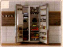
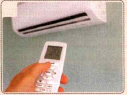
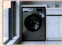
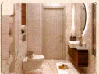
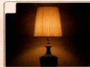

01 · WARM-UP · 0–7 MIN
你喜欢哪个房子？
看图片，说一说：你想住在哪儿？为什么？Kàn túpiàn, shuō yi shuō: Nǐ xiǎng zhù zài nǎr? Wèishénme?
问：你喜欢现在住的房子吗？为什么？让三位学生都回答。
02 · WORDS · 7–15 MIN
房子里有什么？
看图片，选词语。然后用这些词说句子。Kàn túpiàn, xuǎn cíyǔ. Ránhòu yòng zhèxiē cí shuō jùzi.





图片顺序：冰箱、空调、洗衣机、花园、卫生间、灯。После сопоставления попроси составить по одному предложению.
03 · TEXT 1 · 15–22 MIN
他们为什么要换房子？
先猜一猜，再听录音，选择正确答案。Xiān cāi yi cāi, zài tīng lùyīn, xuǎnzé zhèngquè dá'àn.
课文1 · 听力 3-1
王一雪和刘明想做什么？
第二个问题
王一雪为什么不喜欢这个房子？
正确答案：1 A；2 B。Аудио 3-1 из учебника запускается преподавателем отдельно.
04 · TEXT 1 · 22–27 MIN
课文1 · 读一读
分角色读对话。然后回答问题。Fēn juésè dú duìhuà. Ránhòu huídá wèntí.
王一雪小雪的初中离家有点儿远，咱们换一个近点儿的房子吧。
Xiǎoxuě de chūzhōng lí jiā yǒudiǎnr yuǎn, zánmen huàn yí ge jìn diǎnr de fángzi ba.
Школа Сяосюэ далековато от дома. Давай переедем поближе.
刘明好啊，我上网看看。你觉得这个小区怎么样？
Hǎo a, wǒ shàngwǎng kànkan. Nǐ juéde zhège xiǎoqū zěnmeyàng?
Хорошо, посмотрю в интернете. Как тебе этот жилой комплекс?
王一雪环境挺好的，离地铁站还不远。
Huánjìng tǐng hǎo de, lí dìtiězhàn hái bù yuǎn.
Окружение довольно хорошее, и до метро недалеко.
刘明房子里面也不错，空调和洗衣机都是新的。
Fángzi lǐmiàn yě búcuò, kōngtiáo hé xǐyījī dōu shì xīn de.
Внутри тоже неплохо, кондиционер и стиральная машина новые.
王一雪是不错，但是我不喜欢住一层。
Shì búcuò, dànshì wǒ bù xǐhuan zhù yì céng.
Да, неплохо, но я не люблю жить на первом этаже.
刘明这个一层带一个小花园，我觉得咱们可以去看看。
Zhège yì céng dài yí ge xiǎo huāyuán, wǒ juéde zánmen kěyǐ qù kànkan.
У этой квартиры на первом этаже есть маленький сад. Думаю, можно сходить посмотреть.
После чтения: 他们为什么要换房子？因为小雪的初中离家有点儿远。王一雪觉得新小区怎么样？环境挺好的，离地铁站不远。刘明为什么喜欢？空调和洗衣机都是新的。
05 · GRAMMAR · 27–37 MIN
挺……的
看句子，发现规律。然后回答问题。Kàn jùzi, fāxiàn guīlǜ. Ránhòu huídá wèntí.
环境挺好的。
Huánjìng tǐng hǎo de.
Окружающая обстановка довольно хорошая.
这个小区挺好的。
这个颜色挺好看的。
挺 + 形容词 + 的
CCQ: 环境好吗？好。挺好是不是不好？不是。挺 выражает довольно высокую степень.
用“挺……的”回答
1. 你爱游泳吗？
2. 你的床舒服吗？
3. 你觉得现在的天气怎么样？
示例：我挺爱游泳的。我的床挺舒服的。现在的天气挺好的。
06 · SPEAKING · 37–47 MIN
我们搬家吧！
三个人一起讨论：你们想住哪个房子？Sān ge rén yìqǐ tǎolùn: Nǐmen xiǎng zhù nǎge fángzi?
这个小区怎么样？环境挺好的。离地铁站远吗？我觉得……我们去看看吧！
讨论 5 分钟 → 一个人介绍你们的决定。
07 · TEXT 2 · 47–54 MIN
新家有什么问题？
先看图片猜一猜。再听录音，选择答案。Xiān kàn túpiàn cāi yi cāi. Zài tīng lùyīn, xuǎnzé dá'àn.
1. 灯为什么开着？
2. 现在新家是什么样的？
答案：1 C；2 C。Аудио 3-3 воспроизводит преподаватель отдельно.
08 · TEXT 2 · 54–59 MIN
课文2 · 读一读
三个人分角色读，然后回答问题。Sān ge rén fēn juésè dú, ránhòu huídá wèntí.
王一雪我今天早上来的时候，灯还开着。
Wǒ jīntiān zǎoshang lái de shíhou, dēng hái kāizhe.
Когда я пришла утром, свет всё ещё горел.
刘明我这几天忙坏了，可能走的时候忘关了。
Wǒ zhè jǐ tiān máng huài le, kěnéng zǒu de shíhou wàng guān le.
Я ужасно занят последние дни, наверное, забыл выключить, когда уходил.
王一雪冰箱不能用，这些吃的东西放在哪儿？
Bīngxiāng bù néng yòng, zhèxiē chī de dōngxi fàng zài nǎr?
Холодильником нельзя пользоваться. Куда положить продукты?
刘明不可能吧？冰箱是新买的，我来看看。
Bù kěnéng ba? Bīngxiāng shì xīn mǎi de, wǒ lái kànkan.
Не может быть! Холодильник новый. Дай посмотрю.
王一雪洗衣机也坏了吗？
Xǐyījī yě huài le ma?
Стиральная машина тоже сломалась?
刘明没坏，但是卫生间没打扫好，还不能洗衣服。
Méi huài, dànshì wèishēngjiān méi dǎsǎo hǎo, hái bù néng xǐ yīfu.
Нет, но ванная ещё не убрана, поэтому пока нельзя стирать.
王一雪星期天我们真的能搬家吗？
Xīngqītiān wǒmen zhēn de néng bānjiā ma?
Мы действительно сможем переехать в воскресенье?
09 · COMPREHENSION · 54–59 MIN
找证据！
回答问题，在课文里找到证据。Huídá wèntí, zài kèwén lǐ zhǎodào zhèngjù.
1. 他们家的冰箱怎么了？
2. 为什么不能洗衣服？
3. 你觉得星期天他们能不能搬家？为什么？
1. 冰箱不能用，可能坏了。2. 因为卫生间没打扫好。3. 开放回答；例如：我觉得不能，因为新家还有很多问题。
10 · GRAMMAR · 59–69 MIN
坏了 · 程度补语
比较句子：哪个是东西坏了？哪个是程度很高？Bǐjiào jùzi: Nǎge shì dōngxi huài le? Nǎge shì chéngdù hěn gāo?
① 灯坏了。
灯不能用了。
Лампа сломалась.
东西 + 坏了
② 我忙坏了。
我非常忙。
Я ужасно занят.
形容词 + 坏了
Важно: 灯坏了 — «сломалось»; 忙坏了 — комплемент степени. CCQ: 忙坏了是有一点儿忙吗？不是。
11 · CONTROLLED PRACTICE · 69–77 MIN
完成句子
用“坏了”完成句子。先自己写，再和同学核对。Yòng “huài le” wánchéng jùzi. Xiān zìjǐ xiě, zài hé tóngxué héduì.
Возможные ответы: 1 累坏了；2 饿坏了；3 热坏了。
12 · SPEAKING · 77–87 MIN
新家出了问题！
你们刚搬家。一起讨论问题，想想怎么办。Nǐmen gāng bānjiā. Yìqǐ tǎolùn wèntí, xiǎngxiang zěnme bàn.
可以这样说
我觉得……挺……的。……坏了。……还没……好。我们……吧。你觉得怎么样？
5–6 минут говорения. Teacher monitors without interrupting; delayed feedback 2 минуты. Все три роли должны участвовать.
13 · EXIT · 87–90 MIN
今天你会说什么？
每个人说两句话。Měi ge rén shuō liǎng jù huà.
课后作业
我的房子 / 我想住的房子
写 6–8 个句子。用：小区、环境、房子、空调、花园；至少两个“挺……的”句子。
Напиши 6–8 предложений о своём жилье или квартире мечты. Используй слова урока и минимум два предложения с 挺……的.